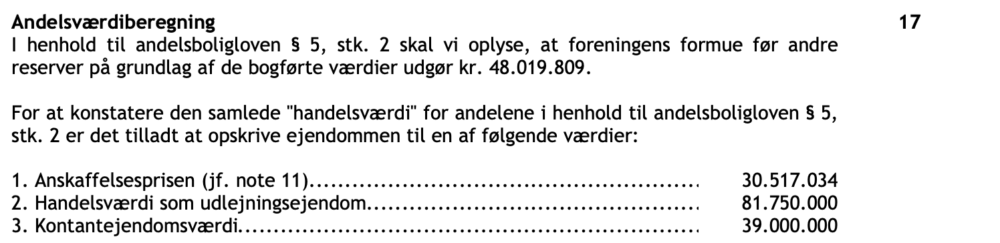
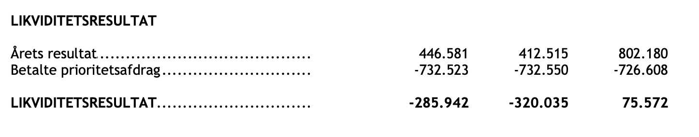
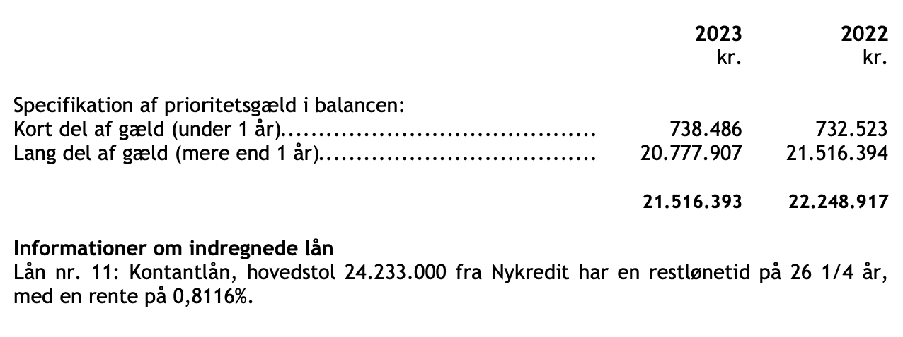
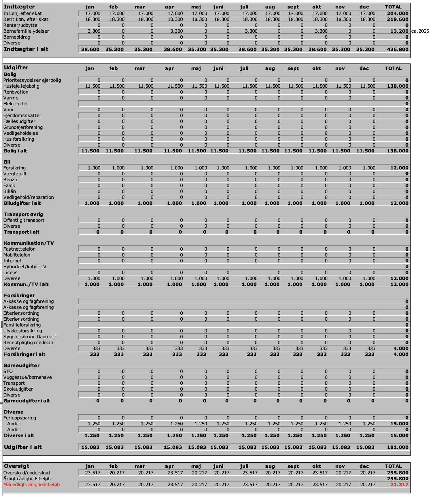
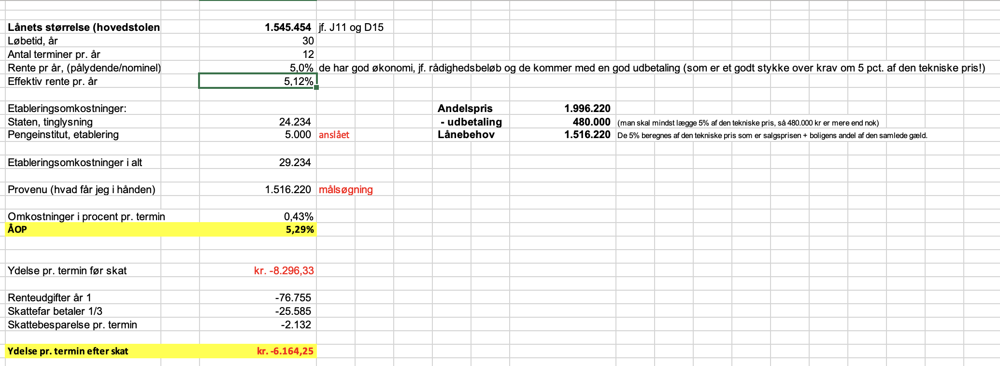
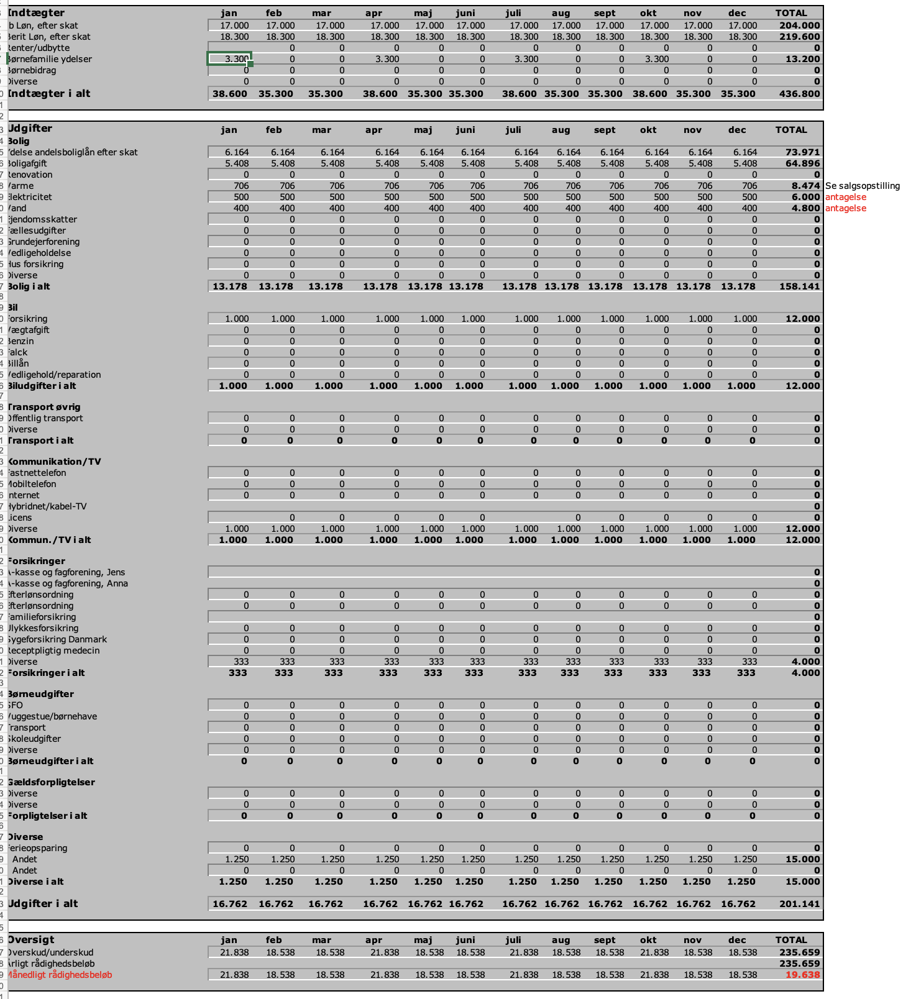

-

Temaprojekt 2 uge 5
Formål:
Løsningsforslag
Formålet med temaprojektet er at give dig kompetence i at bruge, hvad ud har lært i denne uge, i praksis.
Beskrivelse:
I skal læse introen til temaprojektet herunder, før I går i gang med opgaverne.
OLA 2 Intro -
Case: Ib og Berit Andelskøb
Ib & Berit (som er gift og har Mathilde på 11 år) har fundet et dejligt andelsrækkehus på:
Ribeshegnet 7 i 2630 Taastrup - mentalt har de næsten indrettet de 109 m2.
De har fået rekvireret en salgsopstilling, regnskab for andelsboligforeningen, referat af generalforsamling og foreningens husorden (ligger i jeres mappe).
Der har været et nedslag i maksimalprisen så købsprisen er kr. 1.996.220.
Ib og Berit har forhandlet sig frem til at løsøre følger med gratis.
Boligafgiften er på 5.408 kr./mdr.
Ud fra ovenstående er de kommet ned til dig i banken og vil gerne have noget rådgivning:
Afsender:
Du er privatkunde-rådgiver
Modtager:
Ib og Berit
Du bør i denne opgave benytte materialer fra uge-intro samt nedenstående materialer:
Sørg for at genhente skatteskabelon så den er opdateret med nyere bidragssatser
Skatteskabelon
Excel Skatteskabelonen
Dokumenter
Salgsopstilling andelsbolig
Husorden andelsbolig
Regnskab andelsbolig
Referat generalforsamling andelsbolig
Salgsopstilling ejerbolig
-
Opgave
LøsningsforslagBemærk Excel løsningsforslaget i skatteskabelonen ligger nederst i løsningsforslaget
Besvar nedenstående spørgsmål vha. skatteskabelonen.
Hvis der er manglende oplysninger, forsøg da at opstille budgettet bedst muligt inden kundemødet.
-
Hvad er boligydelsen pr. md. for Ribeshegnet 7
Løsningsforslag:
boligydelsen er 5.408,- kr. pr. md. dette fremgår af salgsopstillingen. -
Hvad er er den tekniske pris pr kvm. for Ribeshegnet 7
Vink: Find blot den tekniske pris i salgsopstillingen, den er svær umiddelbart at beregne udfra seneste årsregnskab.
Løsningsforslag:
Den tekniske pris er 2.690.608,39 kr. dette fremgår af salgsopstillingen.
Boligens størrelse er 109 kvm. dette fremgår af salgsopstillingen.
Den tekniske pris pr. kvm. bliver derfor:
2.690.608,39/109 = 24.684,48 kr. pr. kvm.
Dette tal kan benyttes til at sammenligne med kvm, pris for tilsvarende ejerboliger, tommelreglen siger tallet højst må være 80% af kvm prisen for en tilsvarende ejerbolig.
Er eje -
Hvilken kvm. pris skal tilsvarende ejerboliger koste mere end, for at prisen for Ribeshegnet 7 er rimelig i forhold til tommelfingerreglen?
Løsningsforslag:
Den tekniske pris pr. kvm. for Ribeshegnet 7 er:
2.690.608,39/109 = 24.684,48 kr. pr. kvm.
Dette tal kan benyttes til at sammenligne med kvm, pris for tilsvarende ejerboliger, tommelreglen siger tallet højst må være 80% af kvm prisen for en tilsvarende ejerbolig:
24.684,48/0,8 = 30.855,60 kr. pr. kvm.
Reglen siger jo:
Teknisk pris pr. kvm. = Ejerbolig pris pr. kvm. * 0,8
Teknisk pris pr. kvm./0,8 = Ejerbolig pris pr. kvm.
I stedet for at dividere med 0,8 kan man gange med 1,25 da 1/0,8 = 1,25
24.684,48 * 1,25 = 30.855,60 kr. pr. kvm.
-
Hvilket fordelingstal benyttes ved opgørelsen af boligafgiften ifølge salgsopstillingen?
Løsningsforslag:
Fordelingstal vedr. boligafgift: 64.894/1.923.540 = 3,37% -
Hvor mange andelsboliger er der i andelsforeningen?
Vink: Se Nøgleoplysninger i regnskabet.
Løsningsforslag:
Der er 32 andelsboliger -
Hæfter man solidarisk for gæld?
Vink: Se Nøgleoplysninger i regnskabet.
Løsningsforslag:
Nej man hæfter kun for sit indskud, hvilket er godt.
Andelshaverne kan hæfte forskelligt for foreningens fælles lån. Det er vigtigt at vide, hvordan andelshaverne hæfter i den foreningen, da det kan få store økonomiske konsekvenser for en andelshaver, hvis foreningen misligholder sin gæld.
Der er 3 forskellige typer af hæftelse:
- man hæfter kun med sit indskud
- man hæfter pro rata for gælden - altså i forhold til boligens fordelingstal
- man hæfter solidarisk for al gæld
Forklaring:
Du køber andelsboligen for 1.996.220 kr. (dit indskud).
- God situation: Andelsforeningen har det fint økonomisk. Du bor godt og betaler din månedlige boligafgift.
- Dårlig situation: Andelsforeningen går konkurs pga. dårlig økonomi. Du mister din bolig OG de 1.996.220 kr., du betalte for andelen.
-
Ib og Berit ved der også er en anden køber som har budt 2.050.000 kr. bør de være nervøse?
Løsningsforslag:
Ja buddet er lavere end maksimalprisen, så de bør være nervøse, hvis de er meget interesserede i boligen kan de hæve deres bud.
Man må ikke sælge sin andelsbolig til mere end maksimalprisen her er denne 2.077.614,00 kr. jvf salgsopstillingen side 4
Andelsværdi + godkendte forbedringer = Maksimalpris
Tidligere var der mange "sorte penge under bordet" ved køb af andelsbolig.
I dag hvor de ofte sælges gennem mægler og har en høj valuarvurdering er det ikke så ofte mere.
Her hvor buddet er lavere end maksimalprisen, bør de være villige til at byde mere for at købe andelsboligen. -
De har kigget i regnskabet og kan se på side 20, at der er 3 vurderinger af ejendommen:
- anskaffelsespris
- handelsværdi (valuarvurdering)
- kontantværdi (offentlig vurdering)
Løsningsforslag:
Der er meget vigtigt hvilken vurderingsmetode der er anvendt.
På salgsopstillingen side 2 kan man se foreningen anvender valuarvurdering.
I regnskabet side 11 og 16 kan man også det er valuarvurderingen foreningen bruger.
På side 16 i regnskabet kan man se at valuarvurderingen er kr. 51.232.966 højere end den oprindelige anskaffelsespris.
Det gør at formuen bliver meget højere og dermed bliver den enkelte andelsbolig meget mere værd end hvis de havde forsat med anskaffelsesprisen eller den offentlige vurdering, som også er lavere.
Det er genralforsamlingen som beslutter hvilket vurderingsprincip foreningen skal bruge.

Vurderingerne er hentet fra regnskabet side 20
Valuarvurdering:
En valuarvurdering er en officiel vurdering af ejendommens markedsværdi, foretaget af en specialuddannet og certificeret valuar. Denne vurdering er gyldig i 18 måneder og skal betales af foreningen selv.
Valuaren anvender primært metoden kapitalværdimetoden også kaldet "Discounted Cash Flow" (DCF) til at beregne ejendommens værdi.
DCF-metoden tager højde for de forventede fremtidige indtægter (driftsoverskud) fra ejendommen.
Disse indtægter "tilbagediskonteres" ved hjælp af en kalkulationsrenten, der repræsenterer det afkast, en investor realistisk set ville forvente at få på vurderingstidspunktet.
Valuaren skal kunne dokumentere kalkulationsrenten.
Formålet med valuarvurderingen er at sikre mere præcise og gennemsigtige vurderinger, hvilket skal bidrage til en mere stabil og fair andelskrone for andelshaverne.
Valuar-vurdering er usikre, derfor bør man sammenligne teknisk m2-pris med m2-pris på tilsvarende ejerrækkehus. -
Er det en god andelsboligforening - de har kigget på side 10 i regnskabet og kan se der er et overskud på driften på kr. 446.581?
Løsningsforslag:
Der er overskud på driften. Det er godt. Men det er ikke nok til at betale for afdragene på deres lån i foreningen 732.523,- . Så de må tage af den likvide beholdning/kassen! Det kan man ikke blive ved med, så på et tidspunkt er de nødt til at sætte boligafgiften op. Eller få et afdragsfrit lån.
Hentet fra regnskabet side 10 -
Hvorfor er der opgivet 2 tal for egenkapitalen 62.519.809,- og 48.019.809,- i regnskabet?
Løsningsforslag:
Formuen som også kaldes egenkapital er egentlig på kr. 62.519.809 i foreningen.
Men den formue/egenkapital, som bruges til at beregne hvad den enkelte andelsbolig er værd (ved at gange med fordelingstallet) er sat til kr. 48.019.809
Man har nemlig på generalforsamlingen valgt at reservere noget af egenkapital på 63 mill. kr. til hvis ejendommen nu skulle falde 4,5 mill kr i værdi.
Og man har også valgt at reservere noget af egenkapitalen til vedligeholdelse (10 mill. kr.).
Dette er godt for dem som køber sig ind i andelsboligforeningen.
Det betyder nemlig at deres bolig ikke falder i værdi, hvis nu ejendommen skulle falde i værdi op til 4,5 mill kr
eller hvis man fx. optager et lån på 10 mill kr til nyt tag, dræn, kloakering, altaner etc.
-
Ib og Berit har hørt at man skal være opmærksomme på hvilket lån andelsboligforeningen
har - skal de være nervøse for det i denne her andelsboligforening?
Løsningsforslag:

Hentet fra regnskabet side 16
Restgælden er på ca. 22 mill. kr.
Det er ikke oplyst om lånet er variabelt eller fastforrentet, hvilket man bør undersøge nærmere, da en rentestigning vil betyde en stigning i boligafgiften
Til gengæld vides det at lånet med afdrag, så der kommer ikke nogle ubehagelige stigninger i boligafgiften på et tidspunkt når afgiftsfriheden ophører.
-
- Ib har en løn efter skat på 17.000 kr. om måneden
- Berit har en lån efter skat på 18.300 kr. om måneden.
- De har pt. en husleje på 11.500 kr. om måneden incl. varme, vand og el.
- Udgifterne til tv, mobil og inter-net udgør 1.000 kr. om måneden.
- Bilen er betalt og koster dem 1.000 kr. om måneden i forsikring + grøn afgift+ service.
- Øvrige forsikringer 4.000 kr. om året.
- Diverse andre ting udgør 1.250 kr. pr. måned.
- Børneydelser er sat til 3.300,- kr. pr. kvartal
- De har en opsparing på 480.000 kr. som står på en 0 pct. i rente, denne opsparing vil de anvende på boligkøb.
Hvad bliver Ib og Berits rådighedsbeløb før andelsboligkøb?
Du skal ikke regne på beskatning her, kun rådighedsbeløbet
Løsningsforslag:
Dette giver dem et rådighedsbeløb før boligkøb på cirka 21.317 kr. pr. md.

-
Hvad bliver Ib og Berits ydelse pr. termin efter skat hvis vi forudsætter de låner til 5% i rente?
Løsningsforslag:
Ib og Berits ydelse pr. termin efter skat bliver kr. 6.164,25

-
Hvad bliver Ib og Berits rådighedsbeløb efter andelsboligkøb?
Løsningsforslag:
Dette giver dem et rådighedsbeløb før boligkøb på cirka 19.638,- kr. pr. md.
Dette er over det anbefalede minimumsbeløb på 14.400,- pr. md.
Bemærk vi kan ikke beregne gældsfaktor da vi ikke kender parrets bruttoindkomster.
-
Ib og Berit har også set på en ejerbolig Tjørnehaven 56 (salgsopstilling øverst på siden)
Er dette et bedre køb når man sammenligner med tekniske pris pr. kvm. for Ribeshegnet 7?
Man skal kun se på den tekniske pris her, og ikke udregne finansiering, rådighedsbeløb etc. for ejerboligen. Løsningsforslag:
Teknisk pris på andelsrækkehuset vs. Salgspris på ejerrækkehus
Andelsrækkehus tekniske pris 2.690.608
Antal m2 109
Teknisk pris pr. m2 24.684
Ejerrækkehus salgspris 3.195.000
Antal m2 100
Pris pr. m2 31.950
Forskel m2-pris andel vs. ejer: 7.266
Forskel m2-pris andel vs. ejer i procent: 23%
Tommelfingeregel: Andelsboliger skal helst ligge på 20% under en tilsvarende ejerbolig, hvilket er opfyldt her.
Når man får rabat på ca. 23 pct. på m2-prisen og rådighedsbeløbet er størst i andel er andel bedst.
Der er dog mulighed for større opsparing og værdistigninger ved ejer.
Man er ikke afhængig af hvad en generalforsamling bestemmer fsv. angår låntype m.m. ved ejer.
Man vil alt andet lige have mindre rådighedsbeløb ved ejerboligen pga. den større opsparing.
Så der er plusser og minusser ved begge og husk at kigge på selve boligerne og deres stand.
Udregning for Ib og Berit i Skatteskabelonen
Ib og Berit Skatteskabelonen
-
Hvad er boligydelsen pr. md. for Ribeshegnet 7